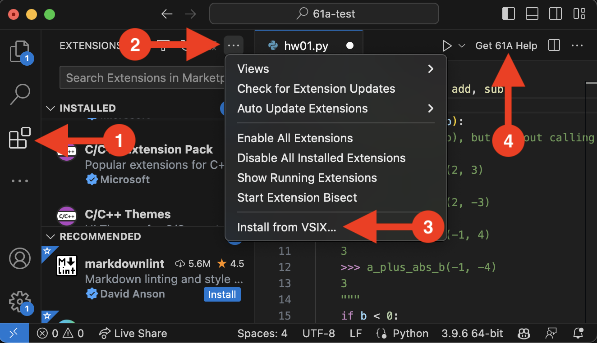

61A Bot (Extension for VS Code)
Overview
61A Bot is an experimental extension for Visual Studio Code (VS Code), an open-source text editor developed by Microsoft, and is powered by GPT-4 through Microsoft's Azure OpenAI service. Microsoft has generously sponsored this project for the semester, and so using this extension is free to both students and the university.
The extension itself adds a "Get 61A Help" button to the top of the main editor that appears whenever the editor loads a 61A assignment file. Clicking this "Get 61A Help" button sends parts of your currently-open code to Microsoft Azure and OpenAI's GPT-4 model, so make sure you're comfortable doing so before clicking the button.
Getting 61A Bot on your own computer
First, install VS Code (instructions).
Second, you can find the link to download the extension pinned on Ed. Download this .vsix file.
Third, install this extension directly in VS Code. This diagram may help:

To install, click the "Extensions" button on the left panel (1). Then, click the
three dots in the "EXTENSIONS" toolbar (2) and select "Install from VSIX..." (3).
Select the .vsix file you downloaded earlier. The extension adds a "Get 61A Help"
button (4) to your editor panel.
Using 61A Bot
- Open a homework file (e.g.,
hw01.py) in VS Code. - Place your cursor inside the function you are working on, or the main function for the homework question.
- Click the "Get 61A Help" button. A progress notification should appear, followed a few seconds later by a hopefully-helpful notification with advice regarding your homework.
61A Bot works by passing your code and some supporting information to GPT-4, a "large language model" that, though generally helpful in our testing, may occasionally provide information that is incorrect or misleading---please keep this in mind as you work with this tool!
Privacy note: The first time you use the "Get 61A Help" button you will be prompted for your email address. This is to identify you to our internal service, and will be recorded internally to help 61A staff understand how students are using the extension over time. Your email will not be sent to Microsoft or OpenAI; note, however, that your full code file will be sent to Microsoft and OpenAI, including any comments within it.
Research Consent (Optional)
61A Bot is being developed in collaboration with a research team led by Prof. Narges Norouzi, who is not affiliated with the course. On first use, you will be asked whether you would like your data to be used in this research. Consenting to research use is completely voluntary, and does not affect your ability to use this extension or your grade in the course.
If you consent, your help requests will be de-identified (e.g., your email address and any other personally identifying information will be removed) before your data is used for research purposes. Any data will be stored securely. This data will be used to improve the extension and to study how students use automated assistance in learning programming. You may be contacted to participate in a survey, which is also voluntary.
You may withdraw your consent at any time by going into the VS Code Settings panel for "61A Bot" and unchecking the "Research Consent" checkbox.
If you have any questions about this research, please contact Prof. Narges Norouzi. This work is being conducted under CPHS protocol ID # 2023-09-16725.